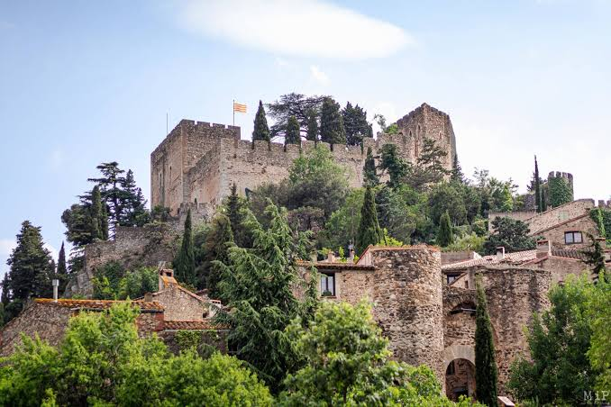

Châteaude Castelnou · village médiéval


⟹ Châteaux & Forteresses ⟸
Le château de Castelnou domine depuis plus d’un millénaire l’un des passages des Aspres. Son apparition dans les textes remonte à la fin du Xe siècle, vers 988-990. Le nom vient du latin castrum novum, passé au catalan Castell Nou, « château neuf ». Sa création s’inscrit dans la réorganisation féodale des anciens comtés catalans : l’ouvrage devient rapidement un centre de commandement, à la fois résidence seigneuriale, place militaire et siège d’une autorité exercée sur le Vallespir puis sur la vicomté qui prend le nom de Castelnou.

Au XIe siècle, les vicomtes de Castelnou figurent parmi les lignages les plus puissants de Catalogne. Guillaume Ier est attesté comme vicomte au début du XIe siècle et la famille conserve durablement le château comme cœur de son pouvoir. Autour de la forteresse se développe un village castral protégé par une enceinte, organisé sur les pentes sous le château. Cette association étroite entre château, remparts et habitat explique encore aujourd’hui la silhouette exceptionnellement cohérente de Castelnou.
La forteresse médiévale n’est pas restée figée. Ses défenses ont été reprises au fil des siècles pour répondre aux rivalités entre les puissances catalanes. La position des vicomtes devient particulièrement délicate après la création du royaume de Majorque en 1276 : le Roussillon relève alors de Jacques II de Majorque, tandis que les Castelnou restent proches de Pierre III d’Aragon. Cette fidélité concurrente place directement la forteresse au cœur de la lutte entre les deux couronnes.
En 1286, le château subit un siège majeur. Jausbert — ou Jaspert — V de Castelnou, fidèle au roi d’Aragon, affronte les forces du roi de Majorque. Les assaillants utilisent notamment la hauteur qui domine le village, aujourd’hui connue sous le nom de « roc de Majorque ». La place est fortement endommagée et Jausbert doit s’exiler. Après son retour, à la suite des accords de la fin du XIIIe siècle, d’importantes réparations et améliorations défensives sont entreprises. Un nouveau siège intervient encore en 1314, témoignage de la persistance des tensions.
À la mort de Jausbert V en 1321, le destin du domaine devient plus mouvant. Le château passe entre plusieurs mains : il est notamment lié à la monarchie majorquine, à la famille de Fenouillet, puis revient à Bérenger de Castelnou, dernier représentant de la lignée vicomtale. Faute d’héritier, celui-ci le cède à la famille de Llupià à la fin du XIVe siècle. Le château demeure donc un enjeu seigneurial important, mais l’époque de la grande puissance autonome des vicomtes de Castelnou est terminée.
En 1483, dans un Roussillon à nouveau disputé, le château connaît un second grand épisode de siège. Les troupes du gouverneur du Roussillon l’attaquent et une partie importante de la forteresse est démolie. À partir de cette période, sa fonction militaire décline progressivement. Les transformations de l’art de la guerre, l’affirmation des États monarchiques et le déplacement des enjeux stratégiques vers de grandes places adaptées à l’artillerie rendent les anciens châteaux féodaux moins essentiels.
Après des siècles d’occupation plus irrégulière, la Révolution française marque une nouvelle rupture. Le château est vendu à la commune, puis connaît au XIXe siècle une véritable renaissance patrimoniale. Ernest Satgé l’acquiert et entreprend une importante restauration, transformant aussi l’ancienne forteresse en résidence. Ces campagnes ont contribué à sauver le monument, même si elles ont parfois interprété l’architecture médiévale selon le goût de leur époque.
Le XXe siècle apporte de nouvelles vicissitudes. Un incendie ravage le château en 1981. Après restauration, il rouvre au public en 1991. En 2018, il devient propriété du Département des Pyrénées-Orientales, qui poursuit sa conservation et sa mise en valeur. Le château reste indissociable du village fortifié, membre des « Plus Beaux Villages de France » depuis 1983 : l’ensemble constitue aujourd’hui l’un des témoignages les plus évocateurs de l’organisation féodale et de l’histoire catalane médiévale des Aspres.
Autour du château, les Aspres conservent la trace d'un passé bien plus ancien : trois dolmens néolithiques — le Serrat d'En Geli, le Pla de l'Arca et le Sola dels Clots — rappellent que ces collines étaient déjà fréquentées bien avant l'arrivée des premiers seigneurs.
Un château neuf devenu, au fil des siècles, la mémoire de pierre d'une vicomté oubliée mais jamais tout à fait éteinte.
— Tradition villageoise de CastelnouRacheté et restauré à la fin du XIXe siècle après des décennies d'abandon, puis relevé une seconde fois après l'incendie de 1981, le château incarne aujourd'hui la renaissance patrimoniale de tout un village, devenu l'un des plus visités des Pyrénées-Orientales.
Thuir et les caves Byrrh à quelques kilomètres, abritant l'un des plus grands foudres de chêne au monde.
Le massif des Aspres et ses sentiers de randonnée entre vignes et garrigue.
Les dolmens néolithiques disséminés sur le territoire de la commune, accessibles à pied.
Le mont Canigou visible depuis les hauteurs du village, montagne sacrée des Catalans.